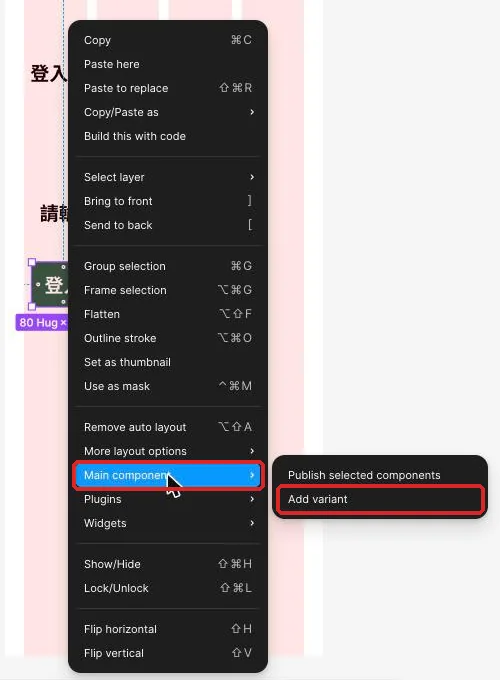
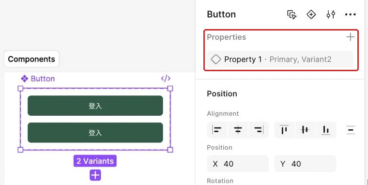
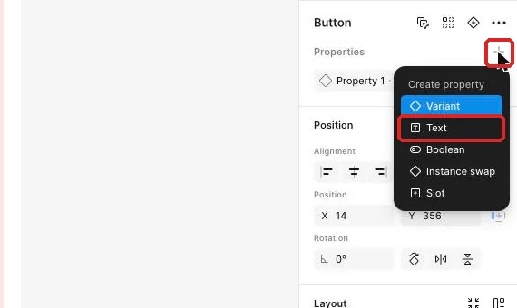
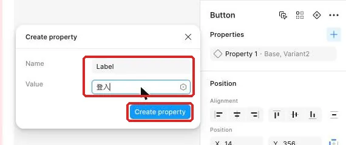
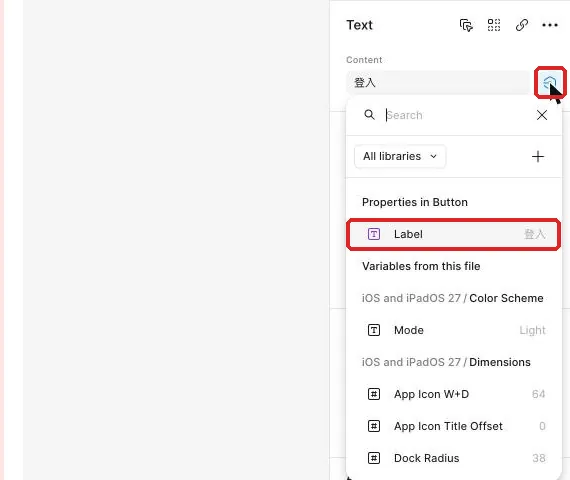
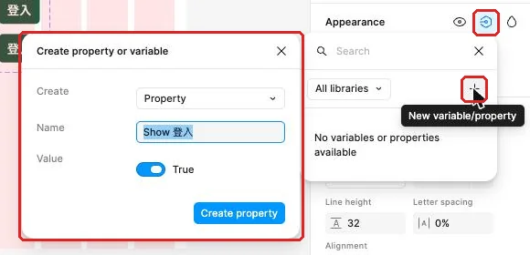
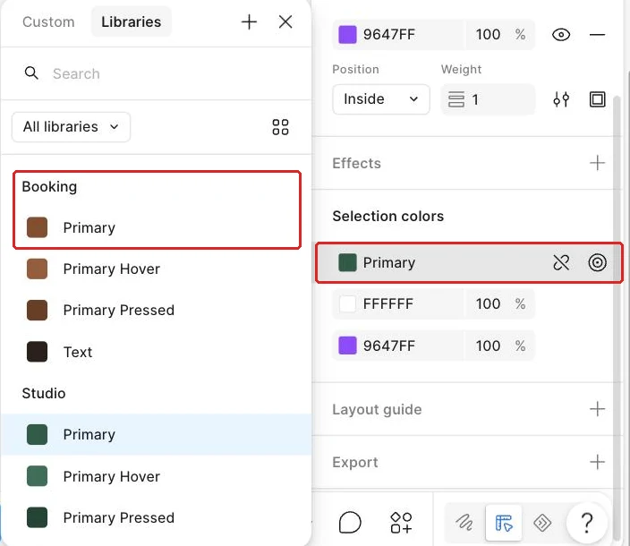

把主次按鈕與狀態做成可選的元件
登入、取消與確認都要共用按鈕，設計者還要能選主要或次要角色，並呈現滑過、按下、焦點與停用狀態。
從上次的按鈕來源接著做
工作室的登入畫面需要醒目的「登入」，確認彈窗需要「確認完成」與「取消」。同一顆按鈕還會經過滑鼠移上、按下和暫時無法操作等狀態；若每遇到一種情況就另做一顆按鈕，外觀很快就會分歧。這堂要把同一家族整理成可選版本，讓設計者能選角色、選狀態，也能決定是否顯示圖示。
這項工作會接著使用上次放在 Components 裡的按鈕來源與巢狀圖示。開始前先看本堂起始材料，確認按鈕仍保有 Auto Layout（自動排版）、Label 文字層與圖示使用處；做完後再開完成檢查表，逐一切換十種組合。沒有上次成果時，先回到改一次來源，讓多個按鈕一起更新，依該頁規格表補做主要按鈕、登入使用處與巢狀圖示，約需 20～30 分鐘。
先選取既有的登入使用處，確認它仍能跟著主元件的圓角更新。接著回到主元件，檢查按鈕的高度、左右內距、字級、圓角與圖示位置。可靠的來源會成為十個 Variant 的共同結構，避免每個狀態長成不同尺寸。
先分清楚：角色和互動狀態回答不同問題
Variant（變體）把同一元件在不同條件下的版本整理成可選組合。Type 表示按鈕在畫面中的角色；State 表示使用者現在如何接觸它，或它能否操作；Label 則說明按下後會發生什麼。三者分開後，設計者可以直接依用途選擇設定。
例如，確認彈窗裡的「確認完成」是 Primary（主要角色），平常顯示 Default，游標移上時變成 Hover，手指或滑鼠按下時變成 Pressed。旁邊的「取消」是 Secondary（次要角色），而且仍可操作，所以 State 維持 Default。若登入資料尚未填齊，「登入」依舊是 Primary，只是 State 暫時選 Disabled。
| 要判斷的事 | 可選內容 | 回答的問題 | 判斷線索 |
|---|---|---|---|
| Type | Primary、Secondary | 這個動作在目前畫面有多重要？ | 一個畫面通常只有一個最醒目的主要動作 |
| State | Default、Hover、Pressed、Focus、Disabled | 使用者目前如何接觸它，或現在能否執行？ | Hover 是滑鼠經過，Pressed 是按下當下，Focus 是鍵盤焦點，Disabled 是條件尚未完成 |
| Label | 登入、取消、確認完成等 | 使用者按下後會發生什麼？ | 用動詞與對象說清楚結果 |
| Show icon | True、False | 這個情境需要圖示輔助嗎？ | 文字已很清楚時可關閉，快速掃讀或圖示慣例明確時可顯示 |
| Icon | Check、Plus、Arrow Left 等 | 顯示哪一個圖示？ | 圖示要和動作一致，仍以文字說明為主 |
Hover 與 Pressed 是短暫回饋。Hover 適合桌面上的滑鼠游標，手機沒有滑鼠經過的狀態；Pressed 則對桌面和手機都有意義，因為它讓使用者在按下那一刻知道系統收到動作。Focus 服務鍵盤操作；使用者按 Tab 移動時，靠按鈕外的焦點圈辨認目前停在哪裡。之後建立原型時，這些 Variant 會成為互動的目標，現在先把視覺差異與命名準備好。
同一個 State 在兩種 Type 上可以有不同外觀，但回饋強度要一致。Primary 的 Hover 改用 Primary Hover 底色，Pressed 改用較深的 Primary Pressed；Secondary 的 Hover 使用 Primary Soft 底色，Pressed 使用 Primary Soft 底色與 1 px Control Border 外框。兩種角色的 Focus 都在按鈕外加 2 px Focus Ring 描邊，Stroke 選 Outside。所有狀態都保留原本尺寸，使用者不會因滑過、按下或取得焦點看到按鈕跳動。
示範：建立十種按鈕與可改文字
這一節會把按鈕來源擴成一個元件集。先看完整規格，再依序處理外觀、屬性與文字；數值集中在表格，操作時只要引用名稱即可。
| Type | State | 填色與文字 | 外框與用途 |
|---|---|---|---|
| Primary | Default | Primary 底、白字 | 可操作的主要動作 |
| Primary | Hover | Primary Hover 底、白字 | 滑鼠移上回饋 |
| Primary | Pressed | Primary Pressed 底、白字 | 按下當下的主要動作 |
| Primary | Focus | Primary 底、白字 | 外加 2 px Focus Ring 描邊，Stroke 選 Outside |
| Primary | Disabled | Disabled 底、Disabled Text 字 | 圖示 Stroke 套用 Disabled Text，條件未完成 |
| Secondary | Default | Card 底、Text 字 | Control Border 1 px 外框；Inside stroke 設為 Excluded；可操作的次要動作 |
| Secondary | Hover | Primary Soft 底、Primary 字 | Control Border 1 px 外框；Inside stroke 設為 Excluded；滑鼠移上回饋 |
| Secondary | Pressed | Primary Soft 底、Text 字 | Control Border 1 px 外框；Inside stroke 設為 Excluded；按下當下回饋 |
| Secondary | Focus | Card 底、Text 字 | 外加 2 px Focus Ring 描邊，Stroke 選 Outside |
| Secondary | Disabled | Disabled 底、Disabled Text 字 | Control Border 1 px 外框；Inside stroke 設為 Excluded；圖示 Stroke 套用 Disabled Text |
共同結構：元件集命名為 Button；每個版本高度 48、水平內距 16、圓角 8；Label 套用 Type / Label；文字屬性預設值為「登入」。Primary 的 Default、Hover、Pressed、Focus 圖示 Stroke 使用白色 Card；Secondary 的四個可操作狀態使用 Text。兩種 Type 的 Disabled 圖示 Stroke 都改用 Disabled Text：它在 Disabled 底色上有 5.18:1 對比，白色圖示在同一底色上只有 1.23:1，看不清。Secondary 的 Default、Hover、Pressed、Disabled 外框都套用 Control Border 變數，與表單控制項的邊界規則一致。
- 在元件區的
Button / Primary上按右鍵，選 Main component → Add variant。Figma 會自動把元件集命名為Button，原本版本的屬性值會帶入 Primary；完成後它會變成紫色虛線框住的元件集，裡面有原本版本和一個新版本，既有使用處仍留在各自畫面。

- 先把元件集旁邊的
Tags移開，替往下新增的版本留出空間。再點虛線框下方的 ＋ 繼續增加版本，直到共有十個；完成後十個版本會往下排列，並從相同結構開始。

- 確認元件集名稱是
Button；完成後，Layers（圖層面板）與 Assets（元件資產面板）會顯示一致的家族名稱。 - 選取元件集，在 Properties（屬性區塊）點 ＋，選 Variant，把新屬性命名為 State；完成後，元件集會有兩個可整理的 Variant 屬性。

- 將原有屬性（Figma 預設叫 Property 1）命名為 Type；完成後，右側會以 Type 與 State 描述版本。
- 逐一選取十個版本，填入規格表中的角色與狀態。屬性值已存在時，從欄位的下拉選單選取，不要直接打字；完成後，每一組 Type 與 State 只出現一次。
- 依規格表調整十個版本的顏色、圖示與外框，並把兩個 Disabled 版本的圖示向量 Stroke 套用
Disabled Text。兩個 Focus 版本的焦點圈做法：在右側 Stroke 區按 ＋ 新增描邊，套用Focus Ring，Weight 改成 2，再把 Stroke 下方的 Position 下拉從 Inside 改成 Outside；描邊畫在按鈕外側，按鈕本身仍是 48 高，焦點圈也不會壓到底色與文字。Secondary 加上 1 px 外框後，在右側 Layout 區塊找到 Auto layout 的進階設定圖示（滑鼠停在圖示上會顯示 Advanced layout settings），打開後把 Inside stroke 改成 Excluded。維持 Included 時，1 px 外框會被算進版面、把文字往內推，Secondary 和 Primary 的文字位置就會差 1 px；改成 Excluded 後外框只畫在邊緣、不佔版面。完成後，主要與次要的層級差異仍清楚，Hover、Pressed、Focus 與 Disabled 也能被辨認，按鈕高度會維持 48。 - 選取元件集，在 Properties 點 ＋ 選 Text，名稱填 Label，預設值填「登入」，再按 Create property；完成後，元件集會出現可編輯的文字屬性。

- 逐一選取十個版本內的
Label文字層，在右側最上方 Content 欄旁點 Apply variable/property 圖示，綁定 Label；完成後，十個版本會使用同一個文字欄位。

- 從 Assets 拖入一個 Button 使用處，將 Label 改成「標記完成」；完成後，按鈕顯示新文字，元件來源與其他使用處的文字維持原狀。
- 依序切換 Type 與 State；完成後，十種外觀都能選到，而且「標記完成」在切換後仍保留。
元件集解決版本選擇，文字屬性解決內容改寫。若切換後文字回到「登入」，表示至少一個 Variant 的文字層尚未綁定 Label；回到該版本補上綁定，再從使用處重試。
接著製造一次可恢復的組合衝突。把其中一個 Secondary／Default 暫時改成 Primary／Default，Figma 會標示組合衝突，警告文字以你看到的畫面為準。重新填回 Secondary／Default 後，十種組合各自唯一，警告也會消失；這比只看顏色更能確認屬性完整。
跟著做：用情境選對角色與狀態
這一節把來源用回工作室畫面。每次先說出「角色、狀態、內容」三個答案，再到右側找對設定。
- 選取既有的
Button / Login，確認它是 Primary／Default；完成後，右側會顯示這組 Type 與 State，畫面仍只有原本的登入按鈕。 - 複製登入按鈕。把副本拖到手機畫面外的空白處。把 Label 改成「取消」。再設定為 Secondary／Default；完成後，外框會採用
Control Border，手機畫面維持原狀。 - 複製取消按鈕。把副本拖到手機畫面外的空白處。把 Label 改成「確認完成」。再設定為 Primary／Default；完成後，兩顆畫面外副本的角色會有清楚差異。
- 依序把確認完成切到 Hover、Pressed 與 Focus；完成後會看到底色、按下與焦點圈回饋，文字和尺寸保持穩定。
- 複製登入按鈕。把副本拖到手機畫面外的空白處。把它設定成必填資料尚未齊全的狀態。在副本旁加入原因「請先填寫帳號與密碼」；完成後，手機畫面外會同時呈現停用外觀與可理解的原因。
- 將「確認完成」改成較長的「確認這筆任務已完成」，再切換十種組合；完成後文字不會遺失，所有版本高度也維持一致。
- 選取其中一個使用處，把 Label 改為「返回清單」，再點右側元件名稱列的 ⋯ 選 Reset instance；完成後文字會回到來源預設值。
完成後，用三欄寫一筆判斷紀錄：「情境是什麼」「選了哪個 Type 與 State」「使用者從外觀和文字知道什麼」。例如，取消是次要動作，但它能讓人安全離開彈窗，因此 Type 是 Secondary，State 保持 Default。
讓圖示能顯示、隱藏，也能交換來源
同一個按鈕元件有時需要圖示，有時只需要文字。這一節為按鈕加入兩個元件屬性：Show icon 控制圖示層是否顯示，Icon 控制要使用哪個巢狀圖示。設計者在使用處右側就能調整，不必進入多層結構尋找圖示。
| 屬性 | 類型 | 預設值 | 使用結果 |
|---|---|---|---|
Show icon | Boolean | True | 開關圖示層可見性 |
Icon | Instance swap | Icon / Check | 在既有圖示元件之間交換 |
- 回到元件集，選取 Primary／Default 裡的圖示使用處；完成後，右側會顯示該圖示的元件名稱與 Appearance（外觀）區塊。
- 在 Appearance 標題列找到眼睛旁的 Apply variable/property 圖示，點 ＋；完成後會開啟「Create property or variable」視窗。

- 選 Create 為 Property。Boolean 的預設名稱會是「Show 圖層名」；把 Name 改成
Show icon，Value 保持 True，再按建立。完成後，元件集 Properties 會出現名稱一致的 Boolean 屬性。 - 逐一選取其他九個 Variant 的圖示使用處（按住 Shift 可一次多選），點 Appearance 標題列同一個 Apply variable/property 圖示，從清單直接點既有的
Show icon，不要按 ＋；按 ＋ 會再建立一個新的 Boolean 屬性。完成後，十個版本的圖示層都連到同一個Show icon，切換狀態時會保留使用處的顯示選擇。 - 選取元件集，在 Properties 按 ＋ 選 Instance swap，名稱填
Icon，預設值選Icon / Check，再按 Create property；完成後，元件集 Properties 會顯示預設為Icon / Check的Icon屬性。 - 逐一選取各 Variant 裡的圖示使用處，點右側名稱列上的 Apply instance swap property 圖示，再把它綁到
Icon；完成後，十個版本會共享同一個圖示選擇。 - 從 Assets 插入新的 Button 使用處；完成後，右側會同時出現
Show icon開關與Icon下拉。 - 關閉
Show icon；完成後，圖示消失，Auto Layout 會收回圖示與文字之間的 Gap，Label 仍置中。 - 再打開
Show icon，把Icon從Icon / Check換成Icon / Plus；完成後，只有這個使用處換圖示，其他按鈕維持原選擇。 - 切換 Type 與 State 逐一檢查；完成後，圖示的顯示與來源選擇不會因切換 Variant 而被重設。
若某個狀態切換後圖示突然恢復，先檢查該 Variant 的圖示層是否連到相同屬性。十個版本的層級與命名一致，Boolean 與 Instance swap 才能在使用處維持同一組選擇。
把主線元件複製給自己的題目
按鈕元件集的 Show icon 與 Icon 屬性完成後，這一節要把同一套結構帶到自己的題目，再把顏色來源換成題目集合。題目的顏色集合是在第 1 堂讓畫面看得清楚：色彩、字型與閱讀順序的「換你做」建立的；還沒建的話，先照那一節建好題目集合再做這一步。這樣題目副本會帶有兩個圖示屬性，主線改顏色也不會影響題目，題目不必從頭做十個 Variant。
- 在手機畫面外按 Shift+S 建立 Section，命名為
Components / 你的題目名，例如Components / Booking；完成後，畫布上會看見一個有題目名稱的元件區。先前已有同名元件區時直接沿用。 - 在 Layers 選取主線按鈕的整個元件集（圖層名
Button，選外層的元件集本身），按 Cmd／Ctrl+D，再把新的元件集拖進題目元件區；完成後，元件區會看見一份完整的十種組合，選取副本時右側 Properties 會顯示Show icon與Icon。只選單一主元件按 Cmd／Ctrl+D 得到的是使用處，所以一定要選整個元件集。 - 把貼上的新元件集改名，例如將
Button改成Booking / Button；完成後，題目元件會和主線來源分開命名，並在 Assets 收進Booking這個題目家族。 - 選取新的元件集。Selection colors 預設會摺疊成一排色塊，先點標題展開清單。點一個
Studio變數色塊，進入 Libraries，再選題目集合裡的同名變數；若搜尋清單同時出現兩個集合的同名變數，看清楚變數旁的集合名稱再選。完成後，元件集裡使用這個顏色的地方會一起換綁。

Primary，就選題目集合裡的 Primary。- 逐一換完後，再看一次 Selection colors；完成後，清單會只顯示題目集合的顏色變數。
- 間距變數不會出現在 Selection colors。在題目元件集內同時選取所有 Variant。接著到 Padding 與 Gap 綁定題目的間距變數；若題目沒有另建間距變數，就沿用
Studio的間距，並在練習紀錄寫明「間距共用」。完成後，所有 Variant 的內距與間隔會一起維持原本版面。
看兩種圖示策略，判斷各自適合的情境
這一節是取捨題，兩個版本都可能合理。版本一的主要按鈕一律顯示圖示，例如勾選搭配「確認完成」、加號搭配「新增任務」；使用者能快速掃到動作類型，但按鈕較容易顯得擁擠。版本二預設關閉圖示，只在空間充足或動作需要額外辨識時打開；畫面較安靜，但相似按鈕只能靠文字區分。
請回答：工作室的「新增任務」與確認彈窗的「確認完成」各適合哪一版？若同一列已有多顆短按鈕，該如何選？理由要同時考慮文字清楚度、可用寬度與圖示是否具有熟悉含義。
查看取捨理由
「新增任務」搭配加號很常見，空間足夠時可採版本一；「確認完成」的文字已很明確，彈窗較窄時可採版本二。多顆按鈕並列時，先保留清楚文字，再只替最需要快速辨識的動作顯示圖示；兩版的判斷重點是情境，不是固定哪一版較好。
卡住時，先查組合再查屬性
這一節整理最常見的失敗現象。先找到出錯層級，再改對應來源，能避免把十個版本逐顆修成不同結果。
| 看到的現象 | 通常的原因 | 怎麼修 |
|---|---|---|
| 只看到 Variant 1、2 等預設名稱 | 屬性名稱尚未整理 | 選元件集，把角色命名為 Type，再新增 State |
| 元件集顯示組合衝突 | 兩個版本使用相同屬性值 | 對照十列表格，補回缺少的組合 |
| 切換狀態後文字回到「登入」 | 某個版本的文字層尚未綁 Label | 選該版本的 Label，用 Apply variable/property 綁定 |
| Secondary 外框與色彩規則不一致 | 外框仍是手填顏色 | 將 Default、Hover、Pressed、Disabled 外框套用 Control Border 變數 |
| Hover 時按鈕尺寸跳動 | 外框改變物件尺寸或結構 | 保持相同高度與內距，讓外框效果不推動內容 |
| 使用處沒有 Show icon | 顯示屬性建在錯誤圖層 | 選元件內的圖示層，從 Appearance 建立 Boolean 屬性 |
| 換圖示後切狀態又恢復 | 只有部分 Variant 綁定 Instance swap | 把十個對應圖示層連到同一個 Icon 屬性 |
修完後再插入一個新的使用處驗證。新的使用處能選到十種組合，也能開關與交換圖示，代表來源已修好。
換你做：你的題目
從你的畫面清單挑出這次對應的畫面。沿用前面建立的 Components / 你的題目名，使用本堂複製並換綁完成的按鈕元件集。狀態標籤是題目專屬元件，這次直接在題目區自建 題目名 / Status（狀態標籤），例如 Booking / Status。完成後，Assets 的 Booking 家族會同時收納題目按鈕與狀態標籤。下面三欄提供可採用的狀態與動作對應；若你的畫面清單採用不同名稱或拆法，以自己的需求初稿為準。狀態值請對照預約需求、點餐需求或會員需求頁與頁內附的資料表。
| 項目 | 規格 |
|---|---|
| 結構 | Auto layout；Padding 上下 Space 4、左右 Space 8；圓角 8 |
| 文字 | 套用 Type / Supporting |
| 可用狀態 | 可預約／供應中／可兌換：Primary Soft 底、Primary Pressed 字 |
| 不可用狀態 | 本週額滿／售完／已兌完：Disabled 底、Disabled Text 字 |
| 條件不足 | 點數不足：Card 底、Control Border 1 px 外框、Text 字 |
- 在題目元件區建立第一個狀態文字，內容使用題目資料中的一個狀態值，再套用
Type / Supporting；完成後，畫布會看見符合題目資料的狀態文字。 - 選取狀態文字，按 Shift+A 轉成 Auto layout，再依規格表設定內距、圓角與顏色；完成後，文字外會出現緊貼內容的標籤底色。
- 把狀態標籤建立成主元件，命名為
題目名 / Status；完成後，元件區會看見一個紫色外框的狀態標籤主元件。 - 選取狀態標籤主元件，按右鍵選 Main component → Add variant，依題目資料加入需要的版本數。名稱含斜線的元件加 Variant 後會被拆開：元件集可能叫
Booking，第一個屬性值叫Status。把元件集改名回題目名 / Status（例如Booking / Status），再把 Variant 屬性命名為 State；完成後，元件區會出現名稱正確、只包含該題目實際狀態的元件集。 - 依規格表填入各個 State 值與外觀；完成後，右側可以直接切換每個狀態，畫面會同步顯示對應文字、底色與外框。
- 從 Assets 把狀態標籤使用處放進題目畫面，再切換成該筆資料的 State；完成後，題目畫面會看見與資料一致的狀態標籤。
三個題目的建議對應
| 預約 | 點餐 | 會員 |
|---|---|---|
狀態標籤使用「可預約／本週額滿」；「送出預約」按鈕具備 Default、Hover、Pressed、Focus、Disabled，並可顯示 Icon / Check 或 Icon / Clock。 | 狀態標籤使用「供應中／售完」；「送出訂單」按鈕具備五種 State，並可顯示 Icon / Check 或 Icon / Plus。 | 狀態標籤使用「可兌換／點數不足／已兌完」；「確認兌換」按鈕具備五種 State，並可顯示 Icon / Check 或 Icon / Chevron Right。 |
要達成的條件：
- 這次做的畫面在你的畫面清單上；清單沒有的，先補進清單並寫一句理由。
- 狀態標籤的 Variant 值完全照題目資料，文字與顏色一起傳達狀態。
- 狀態標籤在題目區自建為
題目名 / Status，採用規格表的 Auto Layout、內距、圓角與文字樣式。 - 狀態標籤的可用、暫停與條件不足外觀都依規格表套用顏色與外框。
- 題目元件放在
Components / 你的題目名，名稱以題目名開頭，能在 Assets 的題目家族中找到。 - 主要確認按鈕具有 Default、Hover、Pressed、Focus、Disabled 五種 State。
- Pressed 使用較深的主色，Hover 有可看見但不改變尺寸的回饋。
- 按鈕右側可以直接開關
Show icon，也能從Icon下拉交換圖示。 - 十個按鈕 Variant 的文字層、圖示層與 Auto Layout 階層一致。
- 已在題目元件集內同時選取所有 Variant，再把 Padding 與 Gap 綁定題目的間距變數；若沿用
Studio，練習紀錄寫明「間距共用」。
合格的結果要能通過的自我檢查：
- 我能從右側切換所有 Type 與 State，不必進入內層重做外觀。
- 狀態標籤只使用需求頁與資料表裡實際存在的狀態值。
- Hover、Pressed、Focus 與 Disabled 各自回答不同情況，尺寸保持穩定。
- 關閉圖示後，文字仍置中且沒有留下多餘空隙。
- 交換圖示後再切換 State，使用處仍保留所選圖示。
真的卡住再看：提示
先完成十種 Type 與 State 組合，再處理屬性；若切換後文字或圖示恢復，逐一檢查每個 Variant 的對應圖層是否綁到同一個屬性。
收好按鈕家族，下一步做完整表單
這堂把工作室裡零散的登入、取消與確認動作，整理成十種可選組合的 Button 元件集。你現在能分開判斷 Type、State、Label 與 Icon，也能用組合表找出重複或缺少的版本；自己的題目則多了一個依真實資料切換的狀態標籤來源。
下一次會把 Button 放進完整表單，並建立文字欄、勾選、單選、下拉與開關元件。今天保持一致的圖層階層與 Auto Layout，會直接影響表單控制項切換狀態時能否穩定。
完成條件：
- Button 元件集具有十個唯一的 Type 與 State 組合。
- 每個 Variant 的文字層都綁定 Label，使用處可直接改字。
- 使用處可開關圖示並交換巢狀圖示來源。
- 自選題目的狀態標籤使用素材中的正確狀態值。
想一想：一顆「取消」按鈕外觀比較低調，是否代表它應該設成 Disabled？
查看答案
不代表。低調描述的是 Secondary 角色；Disabled 描述的是目前無法操作。取消通常是次要但可操作的安全出口，因此應選 Secondary 與 Default。
本堂查證來源
來源查證：2026-11-02。